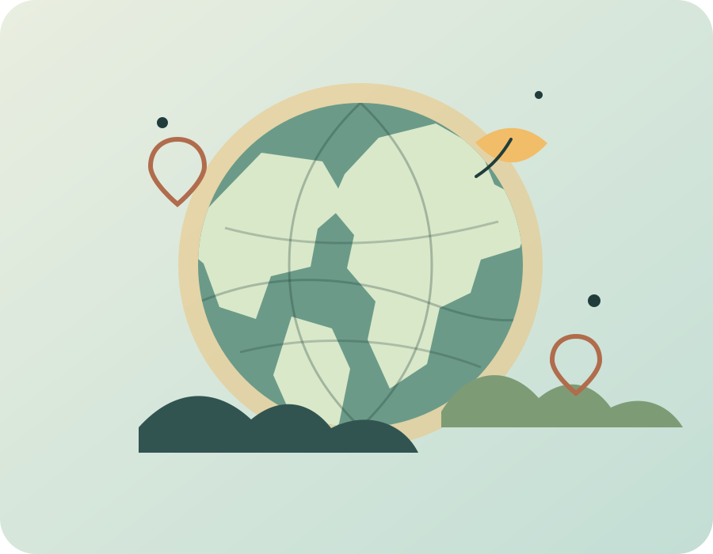

Mengenal iklim
Bedakan cuaca, iklim, pemanasan global, efek rumah kaca, dan tanda perubahan iklim.
Buka materi →Iklimara adalah ruang belajar tentang perubahan iklim: dari cara Bumi menahan panas, jejak emisi di keseharian, dampak yang dirasakan, sampai aksi mitigasi dan adaptasi yang bisa dimulai dari sekitar kita.
Berpijak pada SDG 13 — Climate Action.

Materi disusun berurutan agar kamu bisa menghubungkan penyebab, dampak, dan tindakan—bukan melihatnya sebagai isu yang terpisah.
Bedakan cuaca, iklim, pemanasan global, efek rumah kaca, dan tanda perubahan iklim.
Buka materi →Kenali gas rumah kaca, sumber emisi, dan jejak karbon dari kegiatan sehari-hari.
Buka materi →Telusuri dampak pada air, pesisir, pangan, kesehatan, dan ekosistem.
Buka materi →Menangani penyebab dengan energi bersih, efisiensi, transportasi rendah emisi, dan perlindungan hutan.
Buka materi →Menyiapkan diri menghadapi risiko serta menyusun perubahan kecil yang dapat diukur.
Buka materi →Temukan sumber yang digunakan pada materi dan kenali tujuan website pembelajaran ini.
Tentang & referensi →Catatan: angka berasal dari sumber dan tahun pengukuran yang berbeda; jangan dibandingkan seolah-olah berasal dari satu metode yang sama.
Coba satu pertanyaan cepat sebelum lanjut membaca. Jawabanmu tidak disimpan.